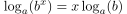
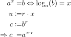
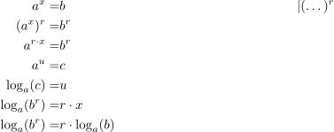

Beweis: Logarithmus: Ausklammern eines Exponenten
1.
Satz

1
2.
Beweis
Über Umformungen durch
Substitution

2
2.0.1.
Umformung über
Substitution

3
Author: Anton Zakrewski
Email:
anton.zakrewski@campus.lmu.de